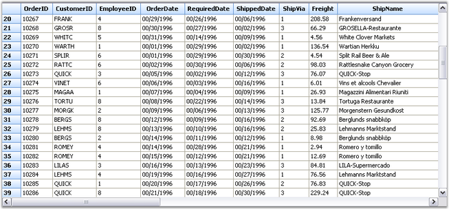
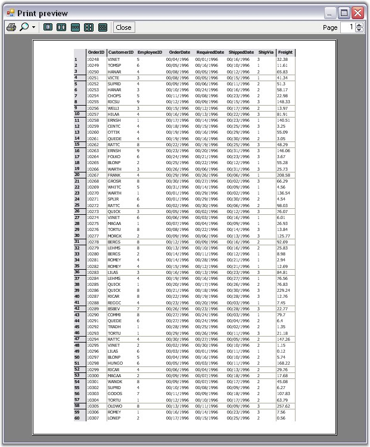
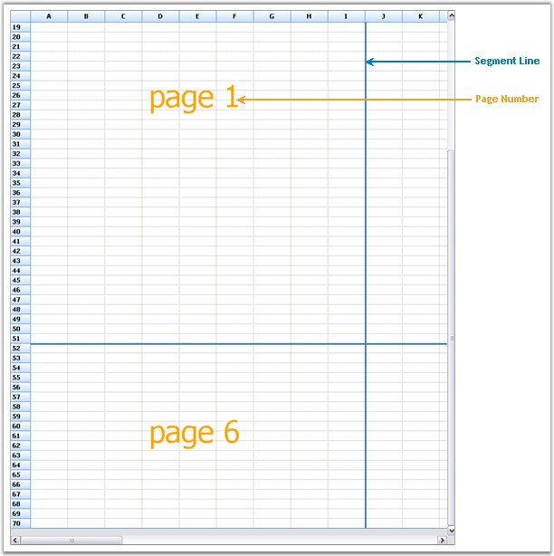

This topic elaborates on printing options supported by the Grid control.
Printing Multiple Grids
You can print multiple grids across various pages by using the GridPrintDocumentAdv helper class. This is achieved by drawing the full size grid to a large bitmap, and then drawing this bitmap, scaled to fit the output page.
By using the ScaleColumnsToFitPage property, columns can be scaled to fit on a single page. Headers and footers can also be added by using the DrawGridPrintHeader and DrawGridPrintFooter events. The following code examples illustrate how to do this.
1. Using C#
|
[C#]
Syncfusion.GridHelperClasses.GridPrintDocumentAdv pd = new Syncfusion.GridHelperClasses.GridPrintDocumentAdv(this.gridControl1); pd.DefaultPageSettings.Margins = new System.Drawing.Printing.Margins(25, 25, 25, 25); pd.HeaderHeight = 70; pd.FooterHeight = 50;
pd.ScaleColumnsToFitPage = true;
PrintPreviewDialog previewDialog = new PrintPreviewDialog(); previewDialog.Document = pd; previewDialog.Show(); |
2. Using VB.NET
|
[VB.NET]
Dim pd As New Syncfusion.GridHelperClasses.GridPrintDocumentAdv(Me.gridControl1) pd.DefaultPageSettings.Margins = New System.Drawing.Printing.Margins(25, 25, 25, 25) pd.HeaderHeight = 70 pd.FooterHeight = 50
pd.ScaleColumnsToFitPage = True
Dim previewDialog As New PrintPreviewDialog() previewDialog.Document = pd previewDialog.Show() |
The following screen shots illustrate the Print Preview feature of the Grid control.

Figure 471: Grid Control

Figure 472: Print Preview of the Grid Control
Print Page Layout
The Print Page Layout feature enables to view the page layout on the grid by displaying a segment line and a page number with each segment. This helps users to analyze page breaks within the grid, and manage them accordingly.
Properties are available to define colors for the line and text of the page layout. The following code examples illustrate how to set the line and text color of the page layout.
1. Using C#
|
[C#]
LayoutSupportHelper layoutHelper; layoutHelper = new LayoutSupportHelper(gridControl1); layoutHelper.LineColor= Color.Blue; layoutHelper.TextColor = Color.Green; |
2. Using VB.NET
|
[VB.NET]
Dim layoutHelper As LayoutSupportHelper layoutHelper = New LayoutSupportHelper(gridControl1) layoutHelper.TextColor = Color.Orange layoutHelper.LineColor = Color.SteelBlue |
Following screen shot illustrates the print page layout feature of the Grid control.

Figure 473: Page Layout of Grid Control